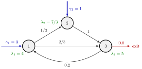

Open Queueing Network¶
Definition¶
An open queueing network consists of stations between which jobs move. External jobs, that is, new jobs that have not visited any station yet, arrive at station with rate , with . After service at station a job moves to station with probability or leaves the network with probability , collected in the routing matrix ; every job eventually leaves. The state at time is the vector of the numbers of jobs at the stations, including those in service.
The model of Section 7.3 adds three assumptions: external jobs arrive as Poisson processes, service times are exponential at every station, and routing is Markov, that is, independent of everything else. Each station is then an station (or with servers), and the network is often called a Jackson network. In a closed network, by contrast, no job enters or leaves.
Interpretation¶
An open network is the multi-station version of a single queue: work enters from outside, is processed in several steps, possibly with returns, and leaves. The external rates are given; the network turns them, through its routing, into the arrival rate at each station.

The figure is the clinic of Example 1: blue arrows are external arrivals, grey arrows carry routing probabilities, the red arrow is the exit. Because of the return arrow from station 3 to station 1, the green station rates exceed the external rates: they follow from the traffic equations, and the exit rate equals .
Stability needs two things. Jobs must be able to leave, otherwise the traffic equations have no solution, and every station must have load . Comparing with the capacity of station is not enough, because fed-back and routed jobs add to the load (Example 3). The Poisson and exponential assumptions are not needed for rates and Little's law; they make each station behave as an queue with arrival rate . The key fact is that the departures of a stationary queue again form a Poisson process with rate (Exercise 7.3.2), so in a network without feedback the split and merged streams downstream are Poisson too. For general service times the notes treat only tandem lines, with the approximations of Section 7.1.
A common slip is to apply Little's law to the network with a station rate instead of the network rate .
Key Results¶
- Flows. The station rates solve ; the network as a whole releases jobs at rate , while each station has departure rate .
- Little's law, network and stations. With , the total sojourn time of a job in the network and the sojourn time per visit at station , . Hence , a sum weighted by the visit ratios .
- stations. If for all , then and , and even the joint distribution factorizes (Jackson product form).
- Tandem of stations. With all jobs entering at station 1 at rate and visiting once, with .
Examples¶
1. A clinic. Patients arrive at registration (station 1) at per hour; per hour come directly to the lab (station 2). After registration a third go to the lab and two thirds to the doctor (station 3); after the lab everybody sees the doctor; after the doctor 20% return to registration for a follow-up and 80% leave. The traffic equations are , and . Hence , so , and . With single servers and hours the loads are , so hours and . In total and hours. The visit-ratio sum gives the same: .
2. Two stations in tandem. Jobs arrive at per hour and visit two stations once, with and hours. Then and hours, almost four times the total service time of hours.
3. External rate below capacity, network unstable. In Example 1 let rise from 3 to 4 per hour. Registration can serve patients per hour, more than the 4 that arrive from outside. Yet and give , so and : the follow-up patients overload registration and the network is unstable.
Prerequisites¶
Related Concepts¶
- Closed Queueing Network
- Jackson Product Form
- Visit Ratio
- Tandem Queue
- Sojourn Time
- Departure SCV Approximation
- Poisson Merging
- Poisson Splitting
Sources¶
- Stochastic Operations Research · Week 7
- N. D. van Foreest, Sample Path Analysis and Simulation of Stochastic Systems, Section 7.3
Aliases: open network, open queueing system, Jackson network, open Jackson network, network of M/M/1 queues Keywords: external arrivals, \gamma_i, |\gamma|, routing matrix, exit probability, |\gamma|\mathbb{E}[J] = \mathbb{E}[L], network sojourn time, Markov routing, patients visiting several stations Symbols: delta, gamma, lambda, rho, sum
Last updated: 29 October 2026 20:42
Open Queueing NetworkJackson Product FormTraffic EquationsRouting MatrixM/M/1 QueueLittle's LawClosed Queueing NetworkVisit RatioTandem QueueSojourn TimeDeparture SCV ApproximationPoisson MergingPoisson Splitting